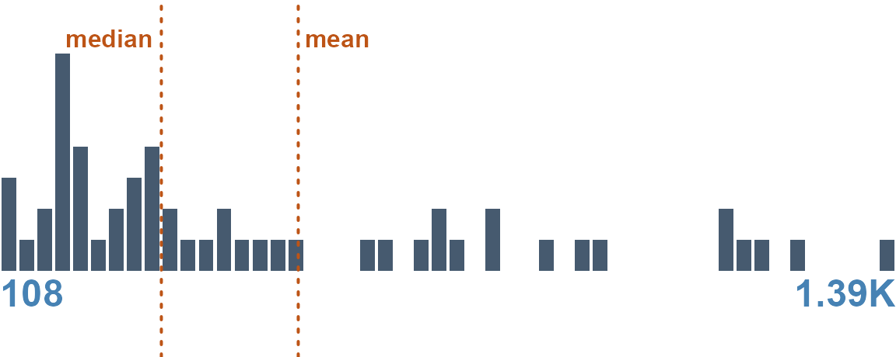
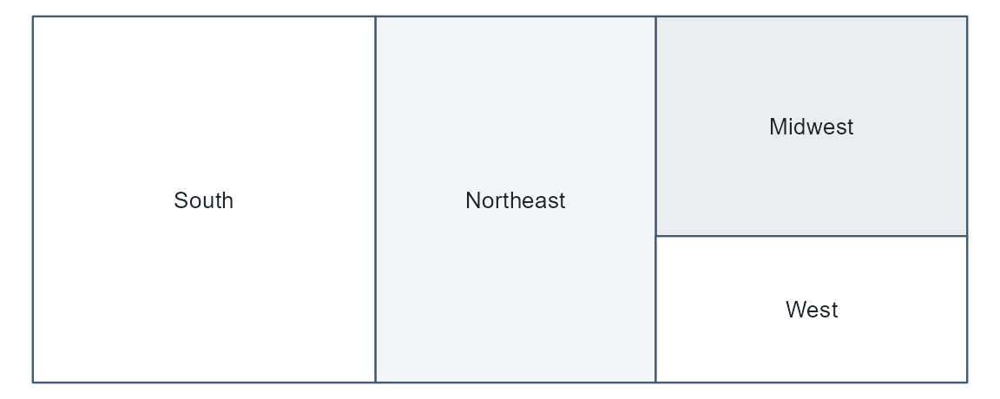
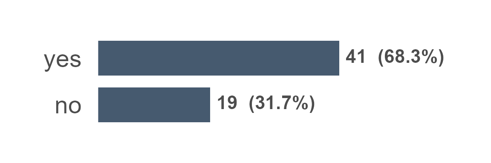
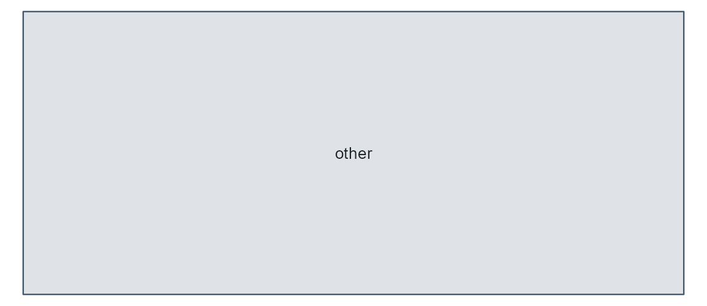

Profiles and Research Guides
research-guides.RmdFrom a new dataset to documentation, fast
The goal is to get from a raw file to stable, publishable documentation with as little hand work as possible. datagoodr does this by combining two things: the formex typing engine, which classifies every column automatically, and a set of default guide templates, which know how to render each type. Put them together and a brand-new dataset has a first, complete Research Guide before you have written a single label.
dgf <- create_dgf(raw_data, file = "DGF", open = FALSE) # type + profile
create_rg(dgf, file = "research-guide") # scaffold the guidecreate_rg() builds a self-contained report pointed at
your DGF. Because the DGF already carries every column’s profile (the
rg_* cells), the guide renders from the governance file
alone — the raw data is not needed again.
The guide opens with a numbered contents list and groups variables by
data type. Each variable gets a left rail (data type, label, name,
description, properties) beside its graphic, data preview and stats.
That is the default "rail" style;
create_rg(dgf, style = "vintage") gives the original
three-column grid. See vignette("example-guides") for
finished guides built from three familiar datasets.
One guide, a different style for each type
A good data profile does not look the same for every column. A distribution of incomes wants a histogram; a set of regions wants to show relative share; a date column wants to show coverage over time. The renderer dispatches on each column’s type and chooses the matching style:
| type | reporting style | what it shows |
|---|---|---|
| number | histogram + quantile table | shape, center, spread, tails |
| categorical | treemap + frequency table | levels sized by share |
| temporal (calendar) | calendar heat-map | coverage and density over dates |
| temporal (grain) | period bars | counts by year / quarter / month |
| boolean | two-bar chart | the TRUE / FALSE split |
| text | word cloud + length summary | vocabulary and typical length |
So the same guide, built from the same DGF, presents an income column, a region column, and a founding-date column each in the form that reads best — without you choosing any of it.
The styles, rendered from the demo dataset
Build a DGF from the package’s demo data (one column per type) and
render each column’s graphic with dg_graphic() — the very
function the guide calls:
library(datagoodr)
dgf <- create_dgf(dg_demo, file = tempfile("dgf"), open = FALSE)
dg_graphic(dgf, "revenue", label = "") # number -> histogram
dg_graphic(dgf, "region", label = "") # categorical -> treemap
dg_graphic(dgf, "is_active", label = "") # boolean -> two-bar chart
dg_graphic(dgf, "event_date", label = "") # temporal -> calendar heat-map
dg_graphic(dgf, "notes", label = "") # text -> word cloud
Five columns, five styles, one line each — and all chosen
automatically from the type. (An identifier such as
county_fips has no graphic by design; it is summarized in
its profile table instead.)
Typing quality drives guide quality
Because the style follows the type, the guide is only as good as the typing. A column mistyped as text renders as a word cloud when it wanted a histogram. This is why datagoodr records how confident each guess is and leaves the final say to you: confirm the easy ones, correct the few that matter, and the guide re-renders in the right style.
For how the types are guessed — the two-axis leaf, the honesty columns, and the storage-safety gate — see Guessing Data Types.
Iterate
The guide is regenerated from the DGF, so improving documentation is
a loop: curate a label or fix a type, re-profile with
update_dgf(), and re-render. Nothing you hand-edited is
lost. For customizing layout, formatting, and narrative around the
generated sections, create_rg() scaffolds an editable
project (a Quarto document plus a DG.R you can override) —
see the package reference.